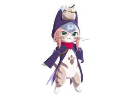

Game play
The core game of monster hunters is to collect materials, hunt monsters, make equipment and challenge stronger monsters. The play method is simple and pure, but the single play method is full of variables [1]: each hunting ground has its own characteristics; There are many kinds of monsters, and their moves and weaknesses are quite different; There are many kinds of equipment with different functions, so it is hard to choose and match them; It is difficult to control the fighting process, and it is difficult to balance the destruction of monster parts with the smooth fighting rhythm; In the player's opinion, "The game process of monster hunters is the process in which the third word of the game name changes from a verb to an adjective.
Weapon
A total of 14 Weapons are in the game; 11 Blademaster Weapons and 3 Gunner Weapons.
Great Sword
Long Sword
Sword & Shield
Dual Blades
Hammer
Hunting Horn
Lance
Gunlance
Switch Axe
Charge Blade
Insect Glaive
Light Bowgun
Heavy Bowgun
Bow
Follower cat system
Players can hire a cat from the cat lady, or let the cat chef in the kitchen change his job to a cat follower; Accompanying cats can fight side by side with hunters (attract hatred) and collect together. Accompanying cats will also grow due to the cultivation of players.
